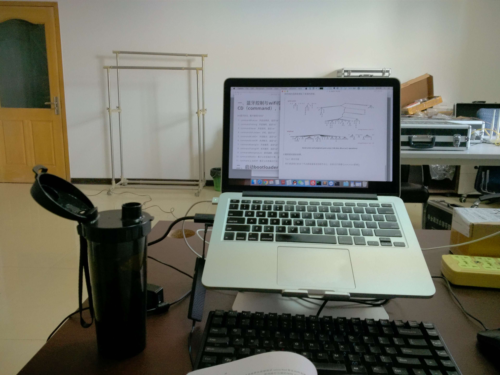

今天是周六了，时间过的快的惊人，这周给我感觉就是没干什么的感觉，突然莫名其妙的就到了周六。
然后在充实的一天学习之后，就到了周日。
这周周一到周五活的有点颓，事情很多，时间很少，每天要被单词，然后还有很多的复习任务，单词越背越多，然后根据记忆曲线推荐的复习单词也越来越多，不过这个周末我调整的不错，这些对于我来说已经不是问题了，我觉得扇贝单词那个应用真的没什么用，词书没有单词软件的多，然后还净是错的，很多东西都没有合理的词根记忆方式。我现在自己找的背诵方式还是挺适合我的，我要是 TOFEL 考得好，我也来分享一下哈。
这个周末和冉学长去吃了火锅，我每次吃火锅都会吃撑，但是还是很喜欢吃火锅的感觉。
周五和朱老师说了要去小屋（他的闲置办公室去学习），我着实调整的不错，效率也得到了很大的提高，应该背的单词都背完了，还能看书写文章，等单词再背几天我就去开始刷 OG 好了，以后的生活只会越来越忙碌，但是如果自己能有成就感，活的还是挺幸福的，哈哈。
一个人呆着活的还能很开心，可能我的性格还是很内向的吧。不过这样最专心了，就像在图书馆一样，不过图书馆要随身带好多东西，心里不爽，还是实验室方便啊，写代码读书复习都很好。看到了书架上的三言二拍，很久以前亚马逊的打折版，纸质不是很好，昨天回顾了第一章，感觉故事缺了点什么，今天用 Kindle 下了一本便携来看，纸质版果然是删掉了很污的东西2333333，三言二拍果然很污。
在找一个后端代码的 Bug ，找了很久目前还在卡着，难过。
唔，复习完单词就去睡觉去好了，明天没什么课，可以复习数学去，顺便继续推 SICP 和相关的文章，我最近在知乎还吸了不少粉啊哈哈，想到哪说到哪，赶紧去复习单词了。
没人打扰的房间开心：
